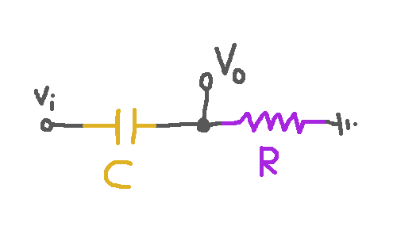

A Signal-Processing Cheatsheet
These are some notes to myself about linear filters.
Symbols
| $f$ | frequency | $\ucy / \us$ |
| $\omega$ | angular frequency | $\ur / \us$ |
| $\phi$ | frame frequency | $\ucy / \uf$ |
| $K$ | sampling rate | $\uf / \us$ |
| $T$ | sample duration | $\us / \uf$ |
\[\omega = 2\pi f \qquad f = \phi K \qquad \phi = f T \]
Continuous Signals
Fourier tells us that all signals $\R
\to \C$ are sums of periodic functions $\lambda t . e^{2\pi i f
t}$, and all LTI (= linear time-invariant) transforms $F : (\R \to
\C) \to (\R \to \C)$ are just fancy ways of independently
adjusting the amplitudes or phases of all the periodic components
of a signal. So we are interested in the frequency and phase
response those particular transforms that are easy to
implement.
The transfer function for a linear time-invariant function $F$ is a
function of $s = i\omega$.
| Low-pass, cutoff $\omega_c$ | \[1\over 1 + s/\omega_c\] |
| Hi-pass, cutoff $\omega_c$ | \[s/\omega_c \over 1 + s/\omega_c\] |
Periodic signals $e^{st} = e^{i\omega t}$ are the eigenvectors of LTI transforms.
Applying a transform with transfer function $\tau(s)$ to $e^{st}$
yields $\tau(s) e^{st}$.
Discrete Signals
Instead of writing transfer functions in terms of $s$, we write them in terms of the operator $z$,
which shifts a signal by one sample. If we have a signal like $t \mapsto e^{st}$, and we
change it to $t \mapsto e^{s(t + T)}$, what we've done is multiply it by $e^{sT}$. So
\[ z = e^{sT} \]
We can approximate continuous transforms with discrete transforms by approximating the exponential.
Some options for approximation include:
\[ z \approx {1\over 1 - sT} \qquad s \approx {1\over T}(1 - z^{-1})\]
\[ z \approx {1 + sT/2\over 1 - sT/2} \qquad s \approx {2\over T}{1 - z^{-1}\over 1 + z^{-1}} \]
\[ z \approx 1 + sT \qquad s \approx {1\over T} {1 - z^{-1}\over z^{-1}}\]
Deriving Low-Passes
If we pick
\[s \approx {1\over T}(1 - z^{-1}) \]
then
\[1\over 1 + s/\omega_c\]
becomes
\[1\over 1 + {1\over T} (1 - z^{-1})/\omega_c\]
\[1\over 1 + 1/T\omega_c - z^{-1}/T\omega_c \]
Multiply:
\[T\omega_c \over T\omega_c + 1 - z^{-1} \]
Define:
\[ \alpha = {1 \over T\omega_c + 1} \]
So this becomes
\[ 1 - \alpha \over 1 - \alpha z^{-1} \]
which arises from
\[y(n) = \alpha y(n-1) + (1-\alpha)x(n)\]
But if we do the bilinear transform
\[ s \approx {2\over T}{1 - z^{-1}\over 1 + z^{-1}} \]
then we get
\[1\over 1 + {2\over T}{1 - z^{-1}\over \omega_c(1 + z^{-1})}\]
\[
= {T\omega_c(1 + z^{-1})\over T\omega_c(1 + z^{-1}) + {2}(1 - z^{-1})}
= {T\omega_c(1 + z^{-1})\over T\omega_c + T\omega_c z^{-1} + 2 - 2z^{-1}}
\]
\[
= {T\omega_c(1 + z^{-1})\over T\omega_c + 2 + (T\omega_c - 2)z^{-1}}
= {{T\omega_c\over 2 + T\omega_c }(1 + z^{-1})\over 1 - {2 - T\omega_c \over 2 + T\omega_c }z^{-1}}
\]
Let $\beta = 2 T\omega_c $ and this is
\[
= {{\beta \over 1 + \beta }(1 + z^{-1})\over 1 - {1 - \beta \over 1 + \beta }z^{-1}}
\]
Let $q = {\beta \over 1 + \beta }$ and this becomes
\[
= {q (1 + z^{-1})\over 1 - (1-2q)z^{-1}}
\]
Circuits
Low-pass Circuit
Note that $\uOm = \uV/\uA$ and $\uA = \uC /\us$ and $\uF = \uC/\uV$.
Suppose we have an input signal
\[ \lambda t . V_i(t) : \R \to \uV \]
or we can just squint and take the time dependence as implicit and say
\[ V_i : \uV \]
Suppose we have a circuit with a resistor with resistance $R :
\mathsf{ohm}$ and a capacitor with capacitance $C :
\mathsf{farad}$.
 By properties of resistors and capacitors, we know
\[ {d\over dt} q = I = (V_i - V_o)/R : (\uA = \uC/\us = \uV/\uOm)\]
\[ V_o = q/C : (\uC/\uF = \uV)\]
Now assume
\[f : \ucy / \us \qquad 2\pi : \ur / \ucy \]
\[ \omega = 2\pi f : \ur / \us \qquad i : 1/\ur \]
\[z = e^{2\pi i f t} = e^{i\omega t} : \C \qquad q = \bar q z:\uC \]
\[V_i = \bar V_i z :\uV \qquad V_o = \bar V_o z: \uV \]
and infer
\[ i\omega \bar q = (\bar V_i - \bar V_o)/R : \uA \]
\[ \bar V_o = \bar q/C : \uV\]
Now we can solve for $\bar V_o$ in terms of $\bar V_i$:
\[ i\omega \bar V_o C = (\bar V_i - \bar V_o)/R : \uA \]
\[ i\omega \bar V_o RC = \bar V_i - \bar V_o : \uV \]
\[ \bar V_o(1 + i\omega RC) = \bar V_i : \uV \]
\[ \bar V_o = {1\over 1 + i\omega RC}\bar V_i : \uV \]
By properties of resistors and capacitors, we know
\[ {d\over dt} q = I = (V_i - V_o)/R : (\uA = \uC/\us = \uV/\uOm)\]
\[ V_o = q/C : (\uC/\uF = \uV)\]
Now assume
\[f : \ucy / \us \qquad 2\pi : \ur / \ucy \]
\[ \omega = 2\pi f : \ur / \us \qquad i : 1/\ur \]
\[z = e^{2\pi i f t} = e^{i\omega t} : \C \qquad q = \bar q z:\uC \]
\[V_i = \bar V_i z :\uV \qquad V_o = \bar V_o z: \uV \]
and infer
\[ i\omega \bar q = (\bar V_i - \bar V_o)/R : \uA \]
\[ \bar V_o = \bar q/C : \uV\]
Now we can solve for $\bar V_o$ in terms of $\bar V_i$:
\[ i\omega \bar V_o C = (\bar V_i - \bar V_o)/R : \uA \]
\[ i\omega \bar V_o RC = \bar V_i - \bar V_o : \uV \]
\[ \bar V_o(1 + i\omega RC) = \bar V_i : \uV \]
\[ \bar V_o = {1\over 1 + i\omega RC}\bar V_i : \uV \]
High-pass Circuit
Suppose we have a circuit with the capacitor and resistor swapped:

In this case we have
\[ {d\over dt} q = I = V_o/R : \uA \]
\[ V_i - V_o = q/C : \uV\]
The roles of $V_o$ and $V_i - V_o$ have swapped.
Make the same assumptions as before, and infer
\[ i \omega \bar q = \bar V_o/R : \uA\]
\[ \bar V_i - \bar V_o = \bar q/C : \uV\]
Now we can solve for $\bar V_o$ in terms of $\bar V_i$:
\[ \bar V_i - \bar V_o = {\bar V_o \over i\omega RC} : \uV\]
\[ \bar V_i = \left(1 + {1 \over i\omega RC}\right)\bar V_o : \uV\]
\[ \bar V_i = {1 + i\omega RC\over i\omega RC}\bar V_o : \uV\]
\[ i\omega RC \bar V_i = \left( {1 + i\omega RC }\right)\bar V_o : \uV\]
\[ \bar V_o = {i\omega RC \over 1 + i\omega RC } \bar V_i: \uV\]
Discrete Signals
Low-Pass Filter
Now suppose instead we have a signal $ s : \uf \to \ua$.
It might be, for example, a periodic signal $s = \lambda n . \bar s e^{2\pi i \phi n}$ where
$\bar s : \ua$ and $\phi : \ucy / \uf$ and $n : \uf$. Let's define
\[\sigma : \uf \to \uf = \lambda n . n + (1\,\uf)\]
\[ z = e^{2\pi i \phi (1\,\uf)} : \C\]
and observe
\[s \o \sigma = \lambda n.\bar s e^{2\pi i \phi (n+1\,\uf)} = \lambda n . z\bar s e^{2\pi i \phi n} = z s\]
Let's say we know the sampling rate $K = 44,100\, \uf / \us$.
In this case $f = \phi K : \ucy / \us$ and $\omega = 2\pi f = 2\pi K \phi : \ur / \us$.
If we recursively define a transformation
\[t(n) = \alpha t(n-1) + (1-\alpha)s(n)\]
for some $\alpha : \C$, and we assume that $s = \bar s z^n$ and $t = \bar t z^n$, then
\[\bar tz^n = \alpha \bar t z^nz^{-1} + (1-\alpha)\bar s z^n\]
\[\bar t = \alpha \bar t z^{-1} + (1-\alpha)\bar s \]
\[\bar t (1-\alpha z^{-1}) = (1-\alpha)\bar s \]
\[\bar t = { 1-\alpha\over 1-\alpha z^{-1} }\bar s \]
Now for relatively small $\phi$, away from the nyquist frequency of ${1\over 2}{\ucy\over \uf} $,
we're going to approximately have
\[ z^{-1} = e^{-2\pi i \phi(1\,\uf)} \approx 1-2\pi i \phi (1\,\uf) : \C \]
So we'll have
\[ \bar t = {1-\alpha \over 1 - \alpha + \alpha \cdot 2\pi i \phi (1\,\uf)} \bar s\]
\[ \bar t = {1 \over 1 + {\alpha\over 1-\alpha} 2\pi i \phi (1\,\uf)} \bar s\]
\[ \bar t = {1\over 1 + {\alpha\over 1-\alpha} 2\pi i f (1\,\uf) / K} \bar s\]
\[ \bar t = {1\over 1 + i \omega {\alpha\over 1-\alpha} (1\,\uf)/K} \bar s \]
So here the role of time constant (formerly $RC: \us$) is played by
${\alpha\over 1-\alpha} (1\, \uf) / K : \us$.
High-Pass Filter
We want to imitate
\[ \bar V_o = {i\omega RC \over 1 + i\omega RC } \bar V_i: \uV\]
so we want
\[ \bar t = {i\omega ({\alpha\over 1-\alpha} (1\, \uf) / K) \over 1 + i\omega ({\alpha\over 1-\alpha} (1\, \uf) / K) } \bar s: \ua\]
hence
\[ \bar t = {i\omega {\alpha} (1\, \uf) / K \over 1-\alpha + i\omega {\alpha} (1\, \uf) / K } \bar s: \ua\]
\[ = {2\pi i\phi {\alpha} (1\, \uf) \over 1-\alpha + 2\pi i\phi {\alpha} (1\, \uf) } \bar s: \ua\]
\[ = {2\pi i\phi {\alpha} (1\, \uf) \over 1-\alpha(1 - 2\pi i\phi (1\, \uf) ) } \bar s: \ua\]
\[ = {2\pi i\phi {\alpha} (1\, \uf) \over 1-\alpha e^{ - 2\pi i\phi (1\, \uf) } } \bar s: \ua\]
\[ = {2\pi i\phi {\alpha} (1\, \uf) \over 1-\alpha z^{-1} } \bar s: \ua\]
\[ = {\alpha -\alpha + 2\pi i\phi {\alpha} (1\, \uf) \over 1-\alpha z^{-1} } \bar s: \ua\]
\[ = {\alpha -\alpha(1 - 2\pi i\phi (1\, \uf)) \over 1-\alpha z^{-1} } \bar s: \ua\]
\[\bar t = {\alpha -\alpha z^{-1} \over 1-\alpha z^{-1} } \bar s: \ua\]
So the recursive specification of the high-pass filter is:
\[t(n) = \alpha ( t(n-1) + s(n) - s(n-1))\]
Exercise: Show the "coinduction step" that if the high-pass and low-pass signals add up to the input signal at one
time step, then they add up to the input signal at the next time step.
Cutoff Frequency
The thing that characterizes the cutoff frequency of the
highpass/lowpass pair is that it's the frequency at which they have
equal responses, when $\omega RC = 1\,\ur$, so when
\[ f_c = {1\,\ur \over 2\pi RC} : \ucy/\us\]
This will make the highpass multiply the signal by
\[ i\over 1+i\]
and the lowpass by
\[ 1\over 1+i\]
and these both have amplitude $\sqrt{2}$.
Rewriting lowpass and highpass response in terms of cutoff
We know
\[ RC = {1\,\ur \over 2\pi f_c} : \us\]
so lowpass and highpass are (ignoring radians as a unit for now)
\[
{ 1 \over 1 + i f /f_c } : \C
\qquad
{ i f /f_c \over 1 + i f /f_c } : \C
\]
Deriving discrete lowpass and highpass
We start from the desired
\[\bar t = { 1 \over 1 + i (1\, \ur) f /f_c } \bar s\]
We know
\[ z^{-1} = e^{-2\pi i \phi(1\,\uf)} \approx 1-2\pi i \phi (1\,\uf) : \C \]
hence
\[( 1 - z^{-1}) / (1\,\uf) \approx 2\pi i \phi : \uf^{-1} \]
and $f = \phi K$. We know
\[\bar t = { 1 \over 1 + i (1\, \ur) 2\pi f /(2\pi f_c) } \bar s\]
so
\[\bar t = { 1 \over 1 + i (1\, \ur) 2\pi \phi K /(2\pi f_c) } \bar s\]
\[\bar t = { 1 \over 1 + (1\, \ur)(1\,\uf)^{-1} (1-z^{-1}) K /(2\pi f_c) } \bar s\]
\[\bar t = { 1 \over 1 + { K \ur\over 2\pi f_c \uf} - z^{-1}{ K \ur\over 2\pi f_c \uf} } \bar s\]
\[\bar t = { 2\pi f_c \uf \over 2\pi f_c \uf + { K \ur} - z^{-1}{ K \ur} } \bar s\]
\[\bar t = { {2\pi f_c \uf\over 2\pi f_c \uf + { K \ur}} \over 1 - z^{-1}{ K \ur \over 2\pi f_c \uf + { K \ur}} } \bar s\]
This seems to be telling us that
\[ \alpha = { K \ur \over 2\pi f_c \uf + { K \ur}} : \C \]
or equivalently
\[ f_c = {K (1 - \alpha) \over 2\pi\alpha} {\ur \over \uf} : \ucy / \us \]
which at least makes sense for extreme values of $\alpha$. Let's do a little concrete test.
Set $K = 44100, f_c = 800$. We can apply the filter with the derived value of $\alpha$,
and confirm that the output peaks at about $\sqrt{2}$ of the input signal.
#![allow(dead_code, unused_labels, unused_variables)]
use std::f64::consts::PI;
const BUF_LEN: usize = 44100;
fn main() {
let sample_rate = 44100.0f64;
let freq = 800.0f64;
let buf: Vec<f64> = (0..BUF_LEN)
.map(|x| (2.0 * PI * freq * (x as f64) / sample_rate).sin())
.collect();
let mut out_buf: Vec<f64> = vec![0.; BUF_LEN];
let alpha = sample_rate / (2.0 * PI * freq + sample_rate);
println!("alpha {:?}", alpha);
let mut prev = 0.0;
let mut max = 0.0;
for (i, b) in buf.iter().enumerate() {
out_buf[i] = alpha * prev + (1.0 - alpha) * b;
prev = out_buf[i];
let a = prev.abs();
if i > ((BUF_LEN as f64) * 0.99) as usize && a > max {
max = a;
}
}
println!("max^2 {:?}", max * max);
}
This code prints out
alpha 0.8976816319233426
max^2 0.47330916400608175
which is pretty close to $\mathtt{max}^2 = 0.5$. The closer we get to
the Nyquist frequency, the less accurate it gets.
Bandpass
Maybe I can say
\[c_n = i\omega/f_n\]
\[L = {1\over (1+c_1)(1+c_2)}\]
\[M = {c_1 + c_2\over (1+c_1)(1+c_2)}\]
\[H = {c_1c_2\over (1+c_1)(1+c_2)}\]
so that
\[|L| = {1\over \sqrt{(1-\omega^2/f_1f_2)^2 + (\omega/f_1 + \omega/f_2)^2} }\]
\[|M| = (\omega/f_1 + \omega/f_2)|L|\]
\[|H| = \omega^2|L|/f_1f_2\]
Graphing this seems to give me what I want. How do I translate this into discrete filters?